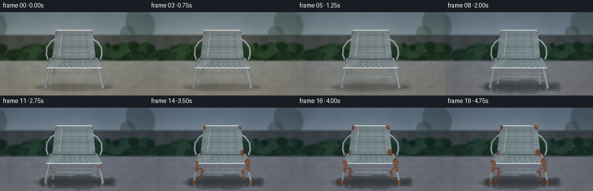
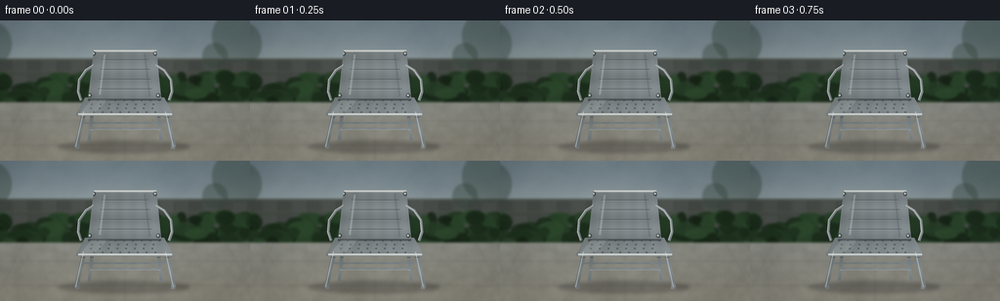
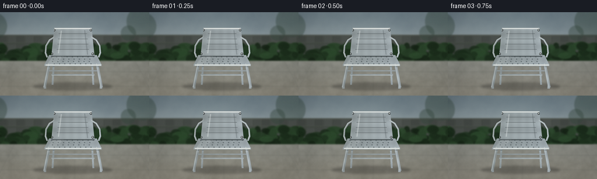
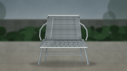
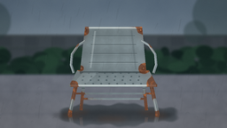
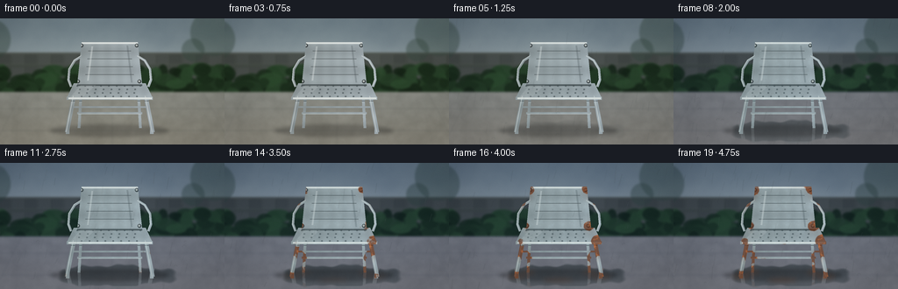
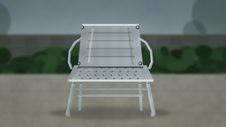
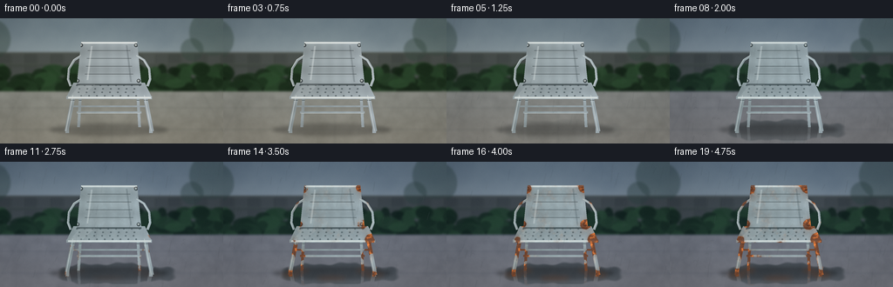
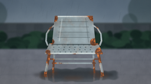

CODING AGENTS AS PIXEL WORLD MODELS
traex/DeepSeek-V4.1-Flash · phygen_158
点击播放 · 原生 RGB 像素
逐轮保存的候选
回放视频、检查图与代码变化。
每份候选均可单独播放。实际图片检查记录在下方工具轨迹中。
候选 01播放与检查图
点击播放 · 原生 RGB 像素


展开代码变化
--- 上一保存版本
+++ 本次保存版本
@@ -0,0 +1,494 @@
+"""Procedural timelapse: a new metal patio chair rusting in the rain."""
+
+from pathlib import Path
+
+import numpy as np
+from PIL import Image, ImageDraw, ImageFilter
+from scipy.ndimage import distance_transform_edt, gaussian_filter
+
+import artifact_io
+
+
+W, H, N, FPS = 256, 144, 20, 4.0
+S = 4
+WW, HH = W * S, H * S
+CASE_DIR = Path(__file__).resolve().parent
+
+
+def sstep(a, b, x):
+ y = np.clip((np.asarray(x) - a) / (b - a), 0.0, 1.0)
+ return y * y * (3.0 - 2.0 * y)
+
+
+def norm(a):
+ lo, hi = np.percentile(a, 1), np.percentile(a, 99)
+ return np.clip((a - lo) / max(hi - lo, 1e-6), 0.0, 1.0)
+
+
+def noise_field(rng, sigmas, shape=(HH, WW)):
+ field = np.zeros(shape, np.float32)
+ total = 0.0
+ for sigma, weight in sigmas:
+ n = gaussian_filter(rng.normal(size=shape).astype(np.float32), sigma)
+ field += weight * norm(n)
+ total += weight
+ return field / total
+
+
+def xy():
+ y, x = np.mgrid[0:HH, 0:WW]
+ return x.astype(np.float32), y.astype(np.float32)
+
+
+def native_xy(x, y):
+ return int(round(x * S)), int(round(y * S))
+
+
+def draw_polygon(draw, alpha_draw, points, fill):
+ pts = [native_xy(x, y) for x, y in points]
+ draw.polygon(pts, fill=fill)
+ alpha_draw.polygon(pts, fill=255)
+
+
+def draw_line(draw, alpha_draw, points, width, fill):
+ pts = [native_xy(x, y) for x, y in points]
+ w = max(1, int(round(width * S)))
+ draw.line(pts, fill=fill, width=w, joint="curve")
+ alpha_draw.line(pts, fill=255, width=w, joint="curve")
+
+
+def draw_circle(draw, alpha_draw, center, radius, fill):
+ cx, cy = native_xy(*center)
+ r = max(1, int(round(radius * S)))
+ box = (cx - r, cy - r, cx + r, cy + r)
+ draw.ellipse(box, fill=fill)
+ alpha_draw.ellipse(box, fill=255)
+
+
+def build_background():
+ x, y = xy()
+ xn, yn = x / WW, y / HH
+ rng = np.random.default_rng(158)
+
+ top = np.array([111.0, 127.0, 135.0], np.float32)
+ horizon = np.array([174.0, 184.0, 183.0], np.float32)
+ sky_t = sstep(0.0, 0.61, yn)[..., None]
+ sky = top * (1.0 - sky_t) + horizon * sky_t
+
+ cloud = noise_field(rng, [(55, 0.55), (25, 0.30), (9, 0.15)])
+ cloud = gaussian_filter(cloud, 3.0)
+ sky += (cloud[..., None] - 0.52) * np.array([18.0, 17.0, 14.0])
+ sky -= np.clip((yn - 0.42), 0, 1)[..., None] * np.array([12.0, 9.0, 7.0])
+
+ img = Image.fromarray(np.uint8(np.clip(sky, 0, 255)), "RGB")
+ d = ImageDraw.Draw(img, "RGBA")
+
+ # Weathered fence, deliberately softened by distance.
+ fence_top, fence_bottom = 39, 88
+ d.rectangle((0, fence_top * S, WW, fence_bottom * S), fill=(79, 84, 77, 255))
+ board_w = 15
+ for i, left in enumerate(range(-2, W + board_w, board_w)):
+ right = left + board_w - 1
+ tone = 66 + (i * 7) % 13
+ d.rectangle(
+ (left * S, (fence_top + 2) * S, right * S, fence_bottom * S),
+ fill=(tone, tone + 5, tone + 1, 255),
+ )
+ d.line(
+ (left * S, (fence_top + 3) * S, left * S, fence_bottom * S),
+ fill=(43, 50, 47, 150),
+ width=2,
+ )
+ for k in range(3):
+ gy = fence_top + 12 + k * 13 + ((i * 5 + k * 7) % 8)
+ d.line(
+ ((left + 3) * S, gy * S, (right - 2) * S, gy * S),
+ fill=(47, 52, 47, 55),
+ width=1,
+ )
+ for ry in (52, 78):
+ d.rectangle((0, ry * S, WW, (ry + 4) * S), fill=(67, 73, 67, 205))
+ d.line((0, ry * S, WW, ry * S), fill=(103, 108, 96, 110), width=2)
+
+ # Dense, rain-dark hedge in front of the fence.
+ hedge_rng = np.random.default_rng(917)
+ for _ in range(125):
+ cx = hedge_rng.uniform(-10, W + 10)
+ cy = hedge_rng.uniform(57, 91)
+ rx = hedge_rng.uniform(5, 15)
+ ry = hedge_rng.uniform(4, 10)
+ g = hedge_rng.integers(35, 73)
+ color = (int(g * 0.62), int(g), int(g * 0.62), 225)
+ box = ((cx - rx) * S, (cy - ry) * S, (cx + rx) * S, (cy + ry) * S)
+ d.ellipse(box, fill=color)
+ d.arc(box, 200, 340, fill=(111, 132, 91, 38), width=1)
+
+ # Concrete patio and perspective seams.
+ d.rectangle((0, 84 * S, WW, HH), fill=(135, 136, 128, 255))
+ ground_noise = noise_field(rng, [(28, 0.45), (9, 0.32), (2, 0.23)])
+ ground = np.asarray(img).astype(np.float32)
+ ground_mask = (y >= 84 * S)
+ grain = (ground_noise - 0.5) * 27.0
+ ground[ground_mask] += grain[ground_mask, None]
+ ground[..., 0] += 4.0 * sstep(84 * S, HH, y)
+ ground[..., 2] -= 4.0 * sstep(84 * S, HH, y)
+ img = Image.fromarray(np.uint8(np.clip(ground, 0, 255)), "RGB")
+ d = ImageDraw.Draw(img, "RGBA")
+
+ for sy in (103, 128):
+ d.line((0, sy * S, WW, sy * S), fill=(88, 92, 87, 155), width=2)
+ d.line((0, (sy + 1) * S, WW, (sy + 1) * S), fill=(180, 179, 168, 55), width=1)
+ for top_x, bottom_x in ((24, -6), (128, 128), (232, 263)):
+ d.line(
+ (top_x * S, 85 * S, bottom_x * S, HH),
+ fill=(91, 94, 89, 115),
+ width=2,
+ )
+
+ # A few soft, out-of-focus garden details.
+ for cx, cy, r in ((-12, 24, 24), (244, 16, 27), (220, 36, 13)):
+ box = ((cx - r) * S, (cy - r) * S, (cx + r) * S, (cy + r) * S)
+ d.ellipse(box, fill=(54, 72, 62, 105))
+
+ img = img.filter(ImageFilter.GaussianBlur(1.15 * S))
+ return np.asarray(img).astype(np.float32)
+
+
+def build_chair():
+ metal = (126, 132, 134)
+ img = Image.new("RGB", (WW, HH), (0, 0, 0))
+ alpha = Image.new("L", (WW, HH), 0)
+ d = ImageDraw.Draw(img)
+ ad = ImageDraw.Draw(alpha)
+
+ # Back panel and seat are separate plates joined to the tubular frame.
+ back = [(96, 30), (160, 30), (165, 81), (90, 81)]
+ draw_polygon(d, ad, back, metal)
+ seat = [(87, 79), (168, 79), (177, 96), (78, 96)]
+ draw_polygon(d, ad, seat, metal)
+
+ # Rear legs, side arms, front legs, and stretchers.
+ draw_line(d, ad, [(96, 77), (91, 124)], 3.5, metal)
+ draw_line(d, ad, [(160, 77), (165, 124)], 3.5, metal)
+ draw_line(d, ad, [(96, 46), (88, 51), (81, 61), (80, 73), (83, 82)], 2.7, metal)
+ draw_line(d, ad, [(160, 46), (168, 51), (175, 61), (176, 73), (173, 82)], 2.7, metal)
+ draw_line(d, ad, [(86, 94), (78, 130)], 4.2, metal)
+ draw_line(d, ad, [(170, 94), (178, 130)], 4.2, metal)
+ draw_line(d, ad, [(91, 111), (165, 111)], 2.3, metal)
+ draw_line(d, ad, [(84, 105), (172, 105)], 2.0, metal)
+
+ # Foot caps and the thick front lip make the chair read at low resolution.
+ draw_line(d, ad, [(77, 129), (81, 129)], 5.2, metal)
+ draw_line(d, ad, [(175, 129), (179, 129)], 5.2, metal)
+ draw_line(d, ad, [(78, 96), (177, 96)], 3.2, metal)
+
+ arr = np.asarray(img).astype(np.float32)
+ a = np.asarray(alpha).astype(np.float32) / 255.0
+ x, y = xy()
+ xn = x / WW
+ yn = y / HH
+ light = (
+ 0.83
+ + 0.29 * xn
+ + 0.045 * np.sin(yn * 42.0)
+ + 0.018 * np.sin(xn * 115.0)
+ )
+ arr *= light[..., None]
+ arr[..., 2] += 4.0 * sstep(0.0, 1.0, xn)
+ arr[..., 1] += 2.0 * (1.0 - np.abs(xn - 0.52))
+ arr = np.clip(arr, 0, 255)
+ img = Image.fromarray(np.uint8(arr), "RGB")
+ d = ImageDraw.Draw(img, "RGBA")
+
+ # Panel grooves, frame shadows, rivets, and crisp specular lines.
+ for gy in (40, 50, 60, 70):
+ inset = (81 - gy) * 0.12
+ d.line(
+ ((99 + inset) * S, gy * S, (157 - inset) * S, gy * S),
+ fill=(77, 84, 86, 145),
+ width=1 * S,
+ )
+ d.line(
+ ((99 + inset) * S, (gy + 1) * S, (157 - inset) * S, (gy + 1) * S),
+ fill=(197, 201, 199, 115),
+ width=1,
+ )
+ d.line((96 * S, 31 * S, 160 * S, 31 * S), fill=(215, 218, 214, 210), width=2 * S)
+ d.line((90 * S, 81 * S, 165 * S, 81 * S), fill=(68, 75, 77, 210), width=2 * S)
+ d.line((107 * S, 35 * S, 102 * S, 76 * S), fill=(220, 224, 222, 72), width=2 * S)
+ d.line((148 * S, 34 * S, 153 * S, 78 * S), fill=(62, 70, 73, 48), width=2 * S)
+
+ for cx, cy in ((96, 34), (159, 34), (92, 77), (162, 77), (85, 48), (171, 48)):
+ d.ellipse(
+ ((cx - 2.1) * S, (cy - 2.1) * S, (cx + 2.1) * S, (cy + 2.1) * S),
+ fill=(67, 73, 75, 255),
+ )
+ d.ellipse(
+ ((cx - 1.35) * S, (cy - 1.45) * S, (cx + 0.9) * S, (cy + 0.8) * S),
+ fill=(202, 206, 202, 210),
+ )
+
+ # Seat perforations and a broad reflected sky stripe.
+ for row, sy in enumerate((82, 86, 90, 94)):
+ for col, sx in enumerate(range(91 + row, 165 - row, 9)):
+ cx = sx + (row % 2) * 2
+ d.ellipse(
+ ((cx - 1.0) * S, (sy - 0.75) * S, (cx + 1.0) * S, (sy + 0.75) * S),
+ fill=(59, 68, 71, 145),
+ )
+ d.polygon(
+ [
+ (94 * S, 81 * S),
+ (111 * S, 81 * S),
+ (96 * S, 95 * S),
+ (82 * S, 95 * S),
+ ],
+ fill=(224, 229, 228, 34),
+ )
+ d.line((80 * S, 96 * S, 176 * S, 96 * S), fill=(222, 226, 222, 205), width=2 * S)
+ d.line((82 * S, 99 * S, 174 * S, 99 * S), fill=(62, 70, 72, 145), width=1 * S)
+
+ # Tube highlights: offset narrow lines are enough to imply chrome.
+ for pts in (
+ [(86, 94), (78, 130)],
+ [(170, 94), (178, 130)],
+ [(96, 46), (88, 51), (81, 61), (80, 73), (83, 82)],
+ [(160, 46), (168, 51), (175, 61), (176, 73), (173, 82)],
+ ):
+ shifted = [(x0 - 0.7, y0 - 0.55) for x0, y0 in pts]
+ d.line(
+ [native_xy(px, py) for px, py in shifted],
+ fill=(222, 227, 224, 135),
+ width=1 * S,
+ joint="curve",
+ )
+ d.line((92 * S, 112 * S, 164 * S, 112 * S), fill=(199, 204, 200, 90), width=1 * S)
+
+ return img, alpha
+
+
+def build_rust_fields(chair_alpha):
+ rng = np.random.default_rng(2401)
+ coarse = noise_field(rng, [(24, 0.48), (9, 0.32), (3, 0.20)])
+ fine = noise_field(rng, [(4, 0.7), (1.2, 0.3)])
+
+ joint = Image.new("L", (WW, HH), 0)
+ jd = ImageDraw.Draw(joint)
+ joints = [
+ (96, 34), (159, 34), (92, 77), (162, 77),
+ (84, 49), (171, 49), (84, 94), (172, 94),
+ (91, 124), (165, 124), (78, 129), (178, 129),
+ (84, 105), (172, 105), (91, 111), (165, 111),
+ ]
+ for cx, cy in joints:
+ r = rng.uniform(2.6, 5.2) * S
+ jd.ellipse((cx * S - r, cy * S - r, cx * S + r, cy * S + r), fill=255)
+ joint = gaussian_filter(np.asarray(joint, np.float32) / 255.0, 2.2 * S)
+ joint = np.clip(joint * 2.5, 0, 1)
+
+ inside = np.asarray(chair_alpha) > 35
+ dist = distance_transform_edt(inside) / S
+ edge = np.exp(-dist / 2.25)
+ x, y = xy()
+ lower = sstep(42 * S, 128 * S, y)
+ score = np.clip(
+ 0.47 * coarse + 0.18 * edge + 0.42 * joint + 0.09 * lower,
+ 0.0,
+ 1.0,
+ )
+ return coarse, fine, joint, edge, score
+
+
+def make_rust_chair(base, alpha, fields, t):
+ coarse, fine, joint, edge, score = fields
+ a = np.asarray(alpha).astype(np.float32) / 255.0
+ rgb = np.asarray(base).astype(np.float32)
+
+ wet = float(sstep(0.08, 0.48, t))
+ rust_t = float(sstep(0.25, 0.98, t))
+ rgb *= 1.0 - 0.10 * wet
+ rgb += wet * np.array([3.0, 8.0, 10.0])
+
+ threshold = 1.115 - 0.57 * rust_t
+ rust = sstep(threshold - 0.055, threshold + 0.075, score)
+ rust *= sstep(0.15, 0.72, t)
+
+ # Corrosion creeps downward from joints as thin, irregular stains.
+ smear = gaussian_filter(rust, sigma=(5.2 * S, 1.3 * S))
+ smear = np.roll(smear, int(2.0 * S), axis=0)
+ rust = np.clip(rust + 0.46 * smear * (0.35 + 0.65 * edge), 0, 1)
+ rust *= a
+
+ dark = np.array([67.0, 34.0, 22.0])
+ mid = np.array([128.0, 62.0, 28.0])
+ bright = np.array([191.0, 103.0, 43.0])
+ mottle = np.clip(0.55 * fine + 0.45 * coarse, 0, 1)
+ rust_rgb = dark * (1.0 - mottle[..., None]) + mid * mottle[..., None]
+ rust_rgb += bright * np.clip((fine - 0.58) * 1.2, 0, 1)[..., None]
+ rust_rgb += wet * np.array([8.0, 4.0, 2.0])
+
+ alpha_mix = np.clip(rust * (0.58 + 0.30 * mottle), 0, 0.93)[..., None]
+ rgb = rgb * (1.0 - alpha_mix) + rust_rgb * alpha_mix
+
+ # Rain-wet sheen, with a little breakup from the fine noise.
+ sheen = wet * (0.50 + 0.50 * np.clip((fine - 0.46) * 2.0, 0, 1))
+ rgb += sheen[..., None] * np.array([8.0, 11.0, 12.0]) * (1.0 - rust[..., None])
+ rgb = np.clip(rgb, 0, 255)
+ return rgb, a
+
+
+def puddle_mask(t):
+ x, y = xy()
+ nx = (x / S - 128.0) / 72.0
+ ny = (y / S - 129.0) / 13.5
+ wobble = (
+ 0.10 * np.sin(x / S * 0.12)
+ + 0.05 * np.sin(x / S * 0.31 + 1.2)
+ + 0.04 * np.sin(y / S * 0.55)
+ )
+ d = np.sqrt(nx * nx + ny * ny) + wobble
+ wet = float(sstep(0.16, 0.54, t))
+ return sstep(1.04, 0.82, d) * wet
+
+
+def make_rain(t, frame_index):
+ rain = Image.new("RGBA", (WW, HH), (0, 0, 0, 0))
+ d = ImageDraw.Draw(rain)
+ amount = float(sstep(0.13, 0.34, t))
+ if amount <= 0:
+ return rain
+ rng = np.random.default_rng(700 + frame_index * 37)
+ count = int(95 * amount)
+ for i in range(count):
+ x = rng.uniform(-20, W + 20) * S
+ y = rng.uniform(-10, H + 10) * S
+ length = rng.uniform(5, 14) * S
+ slant = rng.uniform(1.0, 3.2) * S
+ alpha = int(rng.uniform(34, 96) * amount)
+ width = 1 if i < count * 0.82 else 2
+ d.line((x, y, x - slant, y + length), fill=(189, 211, 219, alpha), width=width)
+ for _ in range(int(18 * amount)):
+ x = rng.uniform(24, W - 24) * S
+ y = rng.uniform(83, H - 5) * S
+ r = rng.uniform(0.8, 2.1) * S
+ d.arc((x - r, y - r, x + r, y + r), 180, 345, fill=(209, 224, 228, 78), width=1)
+ return rain.filter(ImageFilter.GaussianBlur(0.32 * S))
+
+
+def composite(frame, rgb, alpha, y0=None, strength=1.0):
+ a = alpha[..., None] * strength
+ return frame * (1.0 - a) + rgb * a
+
+
+def render_frame(i, background, base_chair, chair_alpha, fields):
+ t = i / (N - 1)
+ frame = background.copy()
+ x, y = xy()
+ wet = float(sstep(0.08, 0.55, t))
+ storm = float(sstep(0.10, 0.62, t))
+
+ # Weather darkens and cools the whole scene without moving the camera.
+ frame *= 1.0 - 0.13 * storm
+ frame[..., 2] += 10.0 * storm
+ frame[..., 0] -= 4.0 * storm
+ haze = np.clip((y / HH - 0.30) * 18.0, 0, 18) * storm
+ frame += haze[..., None] * np.array([0.75, 0.90, 0.96])
+
+ # Wet concrete and a widening puddle.
+ ground = (y > 83 * S)
+ frame[ground] *= 1.0 - 0.10 * wet
+ frame[ground, 2] += 8.0 * wet
+ puddle = puddle_mask(t)
+ frame = composite(
+ frame,
+ np.broadcast_to(np.array([62.0, 75.0, 80.0]), frame.shape),
+ puddle,
+ strength=0.30,
+ )
+
+ chair_rgb, chair_a = make_rust_chair(base_chair, chair_alpha, fields, t)
+
+ # A dim, vertically stretched chair reflection sells the wet patio.
+ y0 = 128 * S
+ yy = np.arange(HH)
+ sy = np.clip(2 * y0 - yy, 0, HH - 1)
+ reflection_rgb = chair_rgb[sy]
+ reflection_a = chair_a[sy]
+ fade = np.exp(-np.maximum(yy - y0, 0) / (19 * S))
+ refl_strength = (puddle * fade[:, None] * (0.12 + 0.18 * wet))[..., None]
+ frame = frame * (1.0 - refl_strength) + reflection_rgb * refl_strength
+
+ # Soft contact shadow, then the chair.
+ shadow = Image.new("RGBA", (WW, HH), (0, 0, 0, 0))
+ sd = ImageDraw.Draw(shadow)
+ sd.ellipse((59 * S, 123 * S, 195 * S, 136 * S), fill=(24, 31, 32, 108))
+ sd.ellipse((78 * S, 125 * S, 180 * S, 134 * S), fill=(17, 23, 24, 90))
+ shadow = shadow.filter(ImageFilter.GaussianBlur(2.0 * S))
+ shadow_arr = np.asarray(shadow).astype(np.float32) / 255.0
+ frame = composite(frame, np.zeros_like(frame), shadow_arr[..., 3], strength=0.58)
+
+ frame = composite(frame, chair_rgb, chair_a)
+
+ # Orange sediment collects below the legs as the finish gives way.
+ sediment = sstep(0.48, 0.98, t)
+ if sediment > 0:
+ stain = Image.new("L", (WW, HH), 0)
+ st = ImageDraw.Draw(stain)
+ for cx, cy, rx, ry in (
+ (80, 130, 10, 4), (91, 126, 8, 3), (165, 126, 8, 3),
+ (177, 130, 11, 4), (126, 134, 17, 3),
+ ):
+ st.ellipse(
+ ((cx - rx) * S, (cy - ry) * S, (cx + rx) * S, (cy + ry) * S),
+ fill=int(80 * sediment),
+ )
+ stain = stain.filter(ImageFilter.GaussianBlur(2.4 * S))
+ stain_arr = np.asarray(stain).astype(np.float32) / 255.0
+ frame = composite(
+ frame,
+ np.broadcast_to(np.array([112.0, 61.0, 32.0]), frame.shape),
+ stain_arr,
+ strength=0.62,
+ )
+
+ # Rain sits in front of the scene, with a few tiny impact glints.
+ rain = make_rain(t, i)
+ rain_arr = np.asarray(rain).astype(np.float32) / 255.0
+ frame = composite(
+ frame,
+ rain_arr[..., :3] * 255.0,
+ rain_arr[..., 3],
+ strength=0.90,
+ )
+
+ # Gentle vignette and fixed film grain keep the small frame from looking flat.
+ xn = (x / WW - 0.5) * 2.0
+ yn = (y / HH - 0.5) * 2.0
+ vignette = 1.0 - 0.13 * np.clip((xn * xn * 0.62 + yn * yn * 0.42), 0, 1)
+ frame *= vignette[..., None]
+ grain_rng = np.random.default_rng(5000 + i)
+ grain = grain_rng.normal(0.0, 1.45, size=(HH, WW, 1)).astype(np.float32)
+ frame += grain
+ frame = np.clip(frame, 0, 255)
+
+ small = Image.fromarray(np.uint8(frame), "RGB").resize(
+ (W, H), Image.Resampling.LANCZOS
+ )
+ return np.asarray(small, dtype=np.uint8)
+
+
+def main():
+ background = build_background()
+ base_chair, chair_alpha = build_chair()
+ fields = build_rust_fields(chair_alpha)
+ frames = [
+ render_frame(i, background, base_chair, chair_alpha, fields)
+ for i in range(N)
+ ]
+ frames = np.stack(frames)
+ artifact_io.save(frames, CASE_DIR)
+ print(f"Saved {frames.shape} RGB frames at {FPS:g} fps")
+
+
+if __name__ == "__main__":
+ main()
候选 02播放与检查图
点击播放 · 原生 RGB 像素

展开代码变化
--- 上一保存版本
+++ 本次保存版本
@@ -155,32 +155,32 @@
def build_chair():
- metal = (126, 132, 134)
+ metal = (156, 164, 166)
img = Image.new("RGB", (WW, HH), (0, 0, 0))
alpha = Image.new("L", (WW, HH), 0)
d = ImageDraw.Draw(img)
ad = ImageDraw.Draw(alpha)
# Back panel and seat are separate plates joined to the tubular frame.
- back = [(96, 30), (160, 30), (165, 81), (90, 81)]
+ back = [(93, 27), (157, 27), (162, 76), (88, 76)]
draw_polygon(d, ad, back, metal)
- seat = [(87, 79), (168, 79), (177, 96), (78, 96)]
+ seat = [(84, 74), (166, 74), (174, 91), (76, 91)]
draw_polygon(d, ad, seat, metal)
# Rear legs, side arms, front legs, and stretchers.
- draw_line(d, ad, [(96, 77), (91, 124)], 3.5, metal)
- draw_line(d, ad, [(160, 77), (165, 124)], 3.5, metal)
- draw_line(d, ad, [(96, 46), (88, 51), (81, 61), (80, 73), (83, 82)], 2.7, metal)
- draw_line(d, ad, [(160, 46), (168, 51), (175, 61), (176, 73), (173, 82)], 2.7, metal)
- draw_line(d, ad, [(86, 94), (78, 130)], 4.2, metal)
- draw_line(d, ad, [(170, 94), (178, 130)], 4.2, metal)
- draw_line(d, ad, [(91, 111), (165, 111)], 2.3, metal)
- draw_line(d, ad, [(84, 105), (172, 105)], 2.0, metal)
+ draw_line(d, ad, [(93, 72), (90, 125)], 3.2, metal)
+ draw_line(d, ad, [(157, 72), (160, 125)], 3.2, metal)
+ draw_line(d, ad, [(93, 43), (85, 48), (79, 58), (78, 70), (81, 78)], 2.8, metal)
+ draw_line(d, ad, [(157, 43), (165, 48), (171, 58), (172, 70), (169, 78)], 2.8, metal)
+ draw_line(d, ad, [(84, 89), (76, 130)], 4.4, metal)
+ draw_line(d, ad, [(166, 89), (174, 130)], 4.4, metal)
+ draw_line(d, ad, [(88, 108), (162, 108)], 2.5, metal)
+ draw_line(d, ad, [(82, 101), (168, 101)], 2.1, metal)
# Foot caps and the thick front lip make the chair read at low resolution.
- draw_line(d, ad, [(77, 129), (81, 129)], 5.2, metal)
- draw_line(d, ad, [(175, 129), (179, 129)], 5.2, metal)
- draw_line(d, ad, [(78, 96), (177, 96)], 3.2, metal)
+ draw_line(d, ad, [(75, 129), (79, 129)], 5.4, metal)
+ draw_line(d, ad, [(171, 129), (175, 129)], 5.4, metal)
+ draw_line(d, ad, [(76, 91), (174, 91)], 3.4, metal)
arr = np.asarray(img).astype(np.float32)
a = np.asarray(alpha).astype(np.float32) / 255.0
@@ -189,36 +189,36 @@
yn = y / HH
light = (
0.83
- + 0.29 * xn
+ + 0.31 * xn
+ 0.045 * np.sin(yn * 42.0)
+ 0.018 * np.sin(xn * 115.0)
)
arr *= light[..., None]
- arr[..., 2] += 4.0 * sstep(0.0, 1.0, xn)
+ arr[..., 2] += 6.0 * sstep(0.0, 1.0, xn)
arr[..., 1] += 2.0 * (1.0 - np.abs(xn - 0.52))
arr = np.clip(arr, 0, 255)
img = Image.fromarray(np.uint8(arr), "RGB")
d = ImageDraw.Draw(img, "RGBA")
# Panel grooves, frame shadows, rivets, and crisp specular lines.
- for gy in (40, 50, 60, 70):
- inset = (81 - gy) * 0.12
+ for gy in (37, 46, 55, 64):
+ inset = (76 - gy) * 0.12
d.line(
- ((99 + inset) * S, gy * S, (157 - inset) * S, gy * S),
+ ((96 + inset) * S, gy * S, (154 - inset) * S, gy * S),
fill=(77, 84, 86, 145),
width=1 * S,
)
d.line(
- ((99 + inset) * S, (gy + 1) * S, (157 - inset) * S, (gy + 1) * S),
+ ((96 + inset) * S, (gy + 1) * S, (154 - inset) * S, (gy + 1) * S),
fill=(197, 201, 199, 115),
width=1,
)
- d.line((96 * S, 31 * S, 160 * S, 31 * S), fill=(215, 218, 214, 210), width=2 * S)
- d.line((90 * S, 81 * S, 165 * S, 81 * S), fill=(68, 75, 77, 210), width=2 * S)
- d.line((107 * S, 35 * S, 102 * S, 76 * S), fill=(220, 224, 222, 72), width=2 * S)
- d.line((148 * S, 34 * S, 153 * S, 78 * S), fill=(62, 70, 73, 48), width=2 * S)
-
- for cx, cy in ((96, 34), (159, 34), (92, 77), (162, 77), (85, 48), (171, 48)):
+ d.line((93 * S, 28 * S, 157 * S, 28 * S), fill=(231, 235, 232, 220), width=2 * S)
+ d.line((88 * S, 76 * S, 162 * S, 76 * S), fill=(69, 77, 79, 210), width=2 * S)
+ d.line((105 * S, 32 * S, 100 * S, 71 * S), fill=(235, 240, 238, 88), width=2 * S)
+ d.line((145 * S, 31 * S, 150 * S, 73 * S), fill=(62, 70, 73, 58), width=2 * S)
+
+ for cx, cy in ((93, 31), (156, 31), (89, 72), (159, 72), (83, 45), (167, 45)):
d.ellipse(
((cx - 2.1) * S, (cy - 2.1) * S, (cx + 2.1) * S, (cy + 2.1) * S),
fill=(67, 73, 75, 255),
@@ -229,8 +229,8 @@
)
# Seat perforations and a broad reflected sky stripe.
- for row, sy in enumerate((82, 86, 90, 94)):
- for col, sx in enumerate(range(91 + row, 165 - row, 9)):
+ for row, sy in enumerate((77, 81, 85, 89)):
+ for col, sx in enumerate(range(88 + row, 162 - row, 9)):
cx = sx + (row % 2) * 2
d.ellipse(
((cx - 1.0) * S, (sy - 0.75) * S, (cx + 1.0) * S, (sy + 0.75) * S),
@@ -238,22 +238,22 @@
)
d.polygon(
[
- (94 * S, 81 * S),
- (111 * S, 81 * S),
- (96 * S, 95 * S),
- (82 * S, 95 * S),
+ (92 * S, 76 * S),
+ (109 * S, 76 * S),
+ (94 * S, 90 * S),
+ (80 * S, 90 * S),
],
fill=(224, 229, 228, 34),
)
- d.line((80 * S, 96 * S, 176 * S, 96 * S), fill=(222, 226, 222, 205), width=2 * S)
- d.line((82 * S, 99 * S, 174 * S, 99 * S), fill=(62, 70, 72, 145), width=1 * S)
+ d.line((78 * S, 91 * S, 173 * S, 91 * S), fill=(231, 235, 231, 215), width=2 * S)
+ d.line((80 * S, 94 * S, 171 * S, 94 * S), fill=(62, 70, 72, 155), width=1 * S)
# Tube highlights: offset narrow lines are enough to imply chrome.
for pts in (
- [(86, 94), (78, 130)],
- [(170, 94), (178, 130)],
- [(96, 46), (88, 51), (81, 61), (80, 73), (83, 82)],
- [(160, 46), (168, 51), (175, 61), (176, 73), (173, 82)],
+ [(84, 89), (76, 130)],
+ [(166, 89), (174, 130)],
+ [(93, 43), (85, 48), (79, 58), (78, 70), (81, 78)],
+ [(157, 43), (165, 48), (171, 58), (172, 70), (169, 78)],
):
shifted = [(x0 - 0.7, y0 - 0.55) for x0, y0 in pts]
d.line(
@@ -262,7 +262,7 @@
width=1 * S,
joint="curve",
)
- d.line((92 * S, 112 * S, 164 * S, 112 * S), fill=(199, 204, 200, 90), width=1 * S)
+ d.line((89 * S, 109 * S, 161 * S, 109 * S), fill=(214, 219, 215, 100), width=1 * S)
return img, alpha
@@ -275,10 +275,10 @@
joint = Image.new("L", (WW, HH), 0)
jd = ImageDraw.Draw(joint)
joints = [
- (96, 34), (159, 34), (92, 77), (162, 77),
- (84, 49), (171, 49), (84, 94), (172, 94),
- (91, 124), (165, 124), (78, 129), (178, 129),
- (84, 105), (172, 105), (91, 111), (165, 111),
+ (93, 31), (156, 31), (89, 72), (159, 72),
+ (83, 45), (167, 45), (82, 89), (168, 89),
+ (90, 124), (160, 124), (77, 129), (173, 129),
+ (82, 101), (168, 101), (88, 108), (162, 108),
]
for cx, cy in joints:
r = rng.uniform(2.6, 5.2) * S
@@ -305,11 +305,11 @@
rgb = np.asarray(base).astype(np.float32)
wet = float(sstep(0.08, 0.48, t))
- rust_t = float(sstep(0.25, 0.98, t))
+ rust_t = float(sstep(0.32, 1.0, t))
rgb *= 1.0 - 0.10 * wet
rgb += wet * np.array([3.0, 8.0, 10.0])
- threshold = 1.115 - 0.57 * rust_t
+ threshold = 1.15 - 0.60 * rust_t
rust = sstep(threshold - 0.055, threshold + 0.075, score)
rust *= sstep(0.15, 0.72, t)
@@ -409,7 +409,7 @@
chair_rgb, chair_a = make_rust_chair(base_chair, chair_alpha, fields, t)
# A dim, vertically stretched chair reflection sells the wet patio.
- y0 = 128 * S
+ y0 = 125 * S
yy = np.arange(HH)
sy = np.clip(2 * y0 - yy, 0, HH - 1)
reflection_rgb = chair_rgb[sy]
@@ -421,8 +421,8 @@
# Soft contact shadow, then the chair.
shadow = Image.new("RGBA", (WW, HH), (0, 0, 0, 0))
sd = ImageDraw.Draw(shadow)
- sd.ellipse((59 * S, 123 * S, 195 * S, 136 * S), fill=(24, 31, 32, 108))
- sd.ellipse((78 * S, 125 * S, 180 * S, 134 * S), fill=(17, 23, 24, 90))
+ sd.ellipse((57 * S, 121 * S, 192 * S, 135 * S), fill=(24, 31, 32, 108))
+ sd.ellipse((75 * S, 124 * S, 176 * S, 133 * S), fill=(17, 23, 24, 90))
shadow = shadow.filter(ImageFilter.GaussianBlur(2.0 * S))
shadow_arr = np.asarray(shadow).astype(np.float32) / 255.0
frame = composite(frame, np.zeros_like(frame), shadow_arr[..., 3], strength=0.58)
@@ -435,8 +435,8 @@
stain = Image.new("L", (WW, HH), 0)
st = ImageDraw.Draw(stain)
for cx, cy, rx, ry in (
- (80, 130, 10, 4), (91, 126, 8, 3), (165, 126, 8, 3),
- (177, 130, 11, 4), (126, 134, 17, 3),
+ (77, 130, 10, 4), (90, 125, 8, 3), (160, 125, 8, 3),
+ (173, 130, 11, 4), (124, 134, 17, 3),
):
st.ellipse(
((cx - rx) * S, (cy - ry) * S, (cx + rx) * S, (cy + ry) * S),
候选 03播放与检查图
点击播放 · 原生 RGB 像素

展开代码变化
--- 上一保存版本
+++ 本次保存版本
@@ -303,31 +303,39 @@
coarse, fine, joint, edge, score = fields
a = np.asarray(alpha).astype(np.float32) / 255.0
rgb = np.asarray(base).astype(np.float32)
+ x, y = xy()
wet = float(sstep(0.08, 0.48, t))
- rust_t = float(sstep(0.32, 1.0, t))
+ rust_t = float(sstep(0.30, 1.0, t))
rgb *= 1.0 - 0.10 * wet
rgb += wet * np.array([3.0, 8.0, 10.0])
- threshold = 1.15 - 0.60 * rust_t
- rust = sstep(threshold - 0.055, threshold + 0.075, score)
+ threshold = 1.12 - 0.61 * rust_t
+ rust = sstep(threshold - 0.05, threshold + 0.07, score)
rust *= sstep(0.15, 0.72, t)
# Corrosion creeps downward from joints as thin, irregular stains.
- smear = gaussian_filter(rust, sigma=(5.2 * S, 1.3 * S))
- smear = np.roll(smear, int(2.0 * S), axis=0)
- rust = np.clip(rust + 0.46 * smear * (0.35 + 0.65 * edge), 0, 1)
+ smear = gaussian_filter(rust, sigma=(7.0 * S, 1.1 * S))
+ smear = np.roll(smear, int(2.4 * S), axis=0)
+ rust = np.clip(rust + 0.53 * smear * (0.38 + 0.62 * edge), 0, 1)
+ rust = np.clip(rust + 0.28 * joint * sstep(0.58, 0.95, t), 0, 1)
+ streak = np.clip(
+ (coarse - 0.48) * 1.8 * np.exp(-((x / S - 121) / 45) ** 2),
+ 0,
+ 1,
+ )
+ rust = np.clip(rust + 0.28 * streak * sstep(0.50, 0.88, t), 0, 1)
rust *= a
- dark = np.array([67.0, 34.0, 22.0])
- mid = np.array([128.0, 62.0, 28.0])
- bright = np.array([191.0, 103.0, 43.0])
- mottle = np.clip(0.55 * fine + 0.45 * coarse, 0, 1)
+ dark = np.array([63.0, 32.0, 21.0])
+ mid = np.array([143.0, 67.0, 27.0])
+ bright = np.array([218.0, 118.0, 43.0])
+ mottle = np.clip(0.60 * fine + 0.40 * coarse, 0, 1)
rust_rgb = dark * (1.0 - mottle[..., None]) + mid * mottle[..., None]
- rust_rgb += bright * np.clip((fine - 0.58) * 1.2, 0, 1)[..., None]
- rust_rgb += wet * np.array([8.0, 4.0, 2.0])
-
- alpha_mix = np.clip(rust * (0.58 + 0.30 * mottle), 0, 0.93)[..., None]
+ rust_rgb += bright * np.clip((fine - 0.52) * 1.7, 0, 1)[..., None]
+ rust_rgb += wet * np.array([7.0, 3.0, 1.0])
+
+ alpha_mix = np.clip(rust * (0.68 + 0.27 * mottle), 0, 0.96)[..., None]
rgb = rgb * (1.0 - alpha_mix) + rust_rgb * alpha_mix
# Rain-wet sheen, with a little breakup from the fine noise.
@@ -430,7 +438,7 @@
frame = composite(frame, chair_rgb, chair_a)
# Orange sediment collects below the legs as the finish gives way.
- sediment = sstep(0.48, 0.98, t)
+ sediment = sstep(0.40, 0.90, t)
if sediment > 0:
stain = Image.new("L", (WW, HH), 0)
st = ImageDraw.Draw(stain)
@@ -440,7 +448,7 @@
):
st.ellipse(
((cx - rx) * S, (cy - ry) * S, (cx + rx) * S, (cy + ry) * S),
- fill=int(80 * sediment),
+ fill=int(100 * sediment),
)
stain = stain.filter(ImageFilter.GaussianBlur(2.4 * S))
stain_arr = np.asarray(stain).astype(np.float32) / 255.0
@@ -448,7 +456,7 @@
frame,
np.broadcast_to(np.array([112.0, 61.0, 32.0]), frame.shape),
stain_arr,
- strength=0.62,
+ strength=0.72,
)
# Rain sits in front of the scene, with a few tiny impact glints.
候选 04播放与检查图
点击播放 · 原生 RGB 像素


展开代码变化
--- 上一保存版本
+++ 本次保存版本
@@ -80,7 +80,7 @@
sky += (cloud[..., None] - 0.52) * np.array([18.0, 17.0, 14.0])
sky -= np.clip((yn - 0.42), 0, 1)[..., None] * np.array([12.0, 9.0, 7.0])
- img = Image.fromarray(np.uint8(np.clip(sky, 0, 255)), "RGB")
+ img = Image.fromarray(np.uint8(np.clip(sky, 0, 255)))
d = ImageDraw.Draw(img, "RGBA")
# Weathered fence, deliberately softened by distance.
@@ -132,7 +132,7 @@
ground[ground_mask] += grain[ground_mask, None]
ground[..., 0] += 4.0 * sstep(84 * S, HH, y)
ground[..., 2] -= 4.0 * sstep(84 * S, HH, y)
- img = Image.fromarray(np.uint8(np.clip(ground, 0, 255)), "RGB")
+ img = Image.fromarray(np.uint8(np.clip(ground, 0, 255)))
d = ImageDraw.Draw(img, "RGBA")
for sy in (103, 128):
@@ -197,7 +197,7 @@
arr[..., 2] += 6.0 * sstep(0.0, 1.0, xn)
arr[..., 1] += 2.0 * (1.0 - np.abs(xn - 0.52))
arr = np.clip(arr, 0, 255)
- img = Image.fromarray(np.uint8(arr), "RGB")
+ img = Image.fromarray(np.uint8(arr))
d = ImageDraw.Draw(img, "RGBA")
# Panel grooves, frame shadows, rivets, and crisp specular lines.
@@ -479,7 +479,7 @@
frame += grain
frame = np.clip(frame, 0, 255)
- small = Image.fromarray(np.uint8(frame), "RGB").resize(
+ small = Image.fromarray(np.uint8(frame)).resize(
(W, H), Image.Resampling.LANCZOS
)
return np.asarray(small, dtype=np.uint8)
可观测工具轨迹
实际执行的命令与返回图片。
命令 1exit 0
/bin/bash -c "pwd && rg --files -g '"'!*__pycache__*'"' | sed -n '1,160p'"
命令 2exit 0
/bin/bash -c "sed -n '1,240p' prompt.txt"
命令 3exit 0
/bin/bash -c "sed -n '1,300p' GENERATION_RULES.md"
命令 4exit 0
/bin/bash -c 'cat task_spec.json'
命令 5exit 0
/bin/bash -c "sed -n '1,260p' artifact_io.py"
命令 6exit 0
/bin/bash -c "sed -n '1,260p' player_template.html"
命令 7exit 0
/bin/bash -c "python - <<'PY' import importlib.util for m in ['numpy','PIL','imageio','cv2','scipy']: print(m, bool(importlib.util.find_spec(m))) PY"
命令 8exit 1
/bin/bash -c 'python generate.py'
命令 9exit 1
/bin/bash -c 'python generate.py'
命令 10exit 0
/bin/bash -c 'python generate.py'
命令 11exit 0
/bin/bash -c "nl -ba generate.py | sed -n '145,310p'"
命令 12exit 0
/bin/bash -c 'python generate.py'
命令 13exit 0
/bin/bash -c "python - <<'PY'
import numpy as np
from PIL import Image
for n in (0,8,19):
a=np.asarray(Image.open(f'frames/{n:02d}.png')).astype(float)
reg=a[70:100,70:180]
print(n, 'mean', np.round(reg.mean((0,1)),1), 'rust', np.round(((reg[:,:,0]-reg[:,:,2])>25).mean(),3))
PY"命令 14exit 0
/bin/bash -c 'python generate.py'
命令 15exit 0
/bin/bash -c 'python -m py_compile generate.py && python generate.py'
命令 16exit 0
/bin/bash -c "python - <<'PY'
from pathlib import Path
import json
import numpy as np
from PIL import Image
spec=json.loads(Path('task_spec.json').read_text())
with np.load('pixels.npz') as z:
p=z['pixels']
print('pixels.npz', p.shape, p.dtype, 'frames=',len(list(Path('frames').glob('*.png'))))
assert p.shape==(spec['height'],spec['width'],spec['frames'])
for i in (0,9,19):
a=np.asarray(Image.open(f'frames/{i:02d}.png'))
print(i, a.shape, a.dtype, 'mean=',np.round(a.mean((0,1)),1).tolist())
print('index.html', Path('index.html').stat().st_size, 'bytes')
PY"命令 17exit 0
/bin/bash -c 'git status --short 2>/dev/null || true'
视觉工具实际返回图片 1

视觉工具实际返回图片 2

视觉工具实际返回图片 3

视觉工具实际返回图片 4

视觉工具实际返回图片 5

视觉工具实际返回图片 6

视觉工具实际返回图片 7

保存候选 4 份；完成命令 17 次；可验证图片返回 7 张。原始 API 响应与完整日志保留在本地。